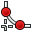
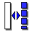
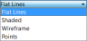
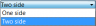

Pracovní plocha Část je určena k tomu aby poskytovala nástroje pro modelování komplexních pevných částí a je založena na Metodologii editace vlastností. Je komplikovaně spojen s Náčrtovou pracovní plochou.
What is a single contiguous solid? This is an item like a casting or something machined from a single block of metal. If the item involves nails, screws, glue or welding, it is not a single contiguous solid. As a practical example, PartDesign would not be used to model a wooden chair, but would be used to model the subcomponents (legs, slats, seat, etc). The subcomponents are combined using the Assembly, Part or Draft workbench.
{kind=link}
Contents
Základní postup práce
Náčrt je stavební blok pro vytváření a editování částí těles. Pracovní postup může být shrnut následovně: nejdříve je vytvořen 2D náčrt, potom je použit nástroj na vytvoření tělesa. V tom okamžiku jsou dostupné následující nástroje:
- Pad (Deska) který vysune náčrt
- Pocket (Kapsa) který vytvoří kapsu (prohlubeň) v existujícím tělese
- Revolve který vytvoří těleso otáčením náčrtu podle osy
- Groove' který vytvoří drážku v existujícím tělese
V budoucích verzích jsou plánovány další nástroje.
Velmi důležitý v pracovní ploše Díly je koncept podpora náčrtu. Náčrty mohou být vytvořeny ve standardních rovinách (XY, XZ, YZ a v rovinách rovnoběžných k nim) nebo na povrchu existujícího tělesa. V tomto posledním případě se těleso stává podpůrným náčrtem. Některé nástroje budou pracovat pouze s náčrty které mají podpůrné těleso, např. Pocket (Kapsa) - bez podpůrného tělesa by nebylo z čeho odebírat materiál!
Po tom co je vytvořena konstrukce tělesa, může být modifikována pomocí zkosení a zaoblení nebo transformována, např. zrcadlena nebo vzorována.
Pracovní plocha Díly je yrčena k vytváření samostatného spojeného tělesa. Pro vícenásobná tělesa je vhodnější Sestavovací pracovní plocha.
As we create a model in the Part Design Workbench, each feature takes the shape of the last one and adds or removes something, creating linear dependencies from feature to feature as the model is created. Hence a "Cut" feature is not only the cut hole itself, but the whole part with the cut. As a new feature is added to the model, FreeCAD turns off visibility of the old features. The user usually should only have the newest item (feature) in the model tree visible, because otherwise the other phases of the model overlay each other, and holes are filled in by the earlier model features that didn't yet have those holes.
To toggle visibility of an object on or off, select it in the hierarchy tree and press the Spacebar. Usually everything but the last item in the hierarchy tree should be greyed out and therefore not visible in the 3D view.
Nástroje
Nástroje pracovní plochy Díly jsou umístěny v menu Part Design (Návrh dílu), které se zobrazí když natáhnete modul Part Design (Návrh dílu).
Zahrnují nástroje Náčrtová pracovní plocha, protože modul Part Design (Návrh dílu) na ní závisí.
Nástroje pro náčrty
Sketcher Geometries
These are tools for creating objects.
-
 Bod: Draws a point
Bod: Draws a point - Oblouk: Draws an arc segment from center, radius, start angle and end angle
- Kružnice: Draws a circle from center and radius
- 2-Bod Přímka: Draws a line segment from 2 points
- Lomená čára (multiple-point line): Draws a line made of multiple line segments
- Obdélník: Draws a rectangle from 2 opposite points
-  Zaoblení: Makes a fillet between two lines joined at one point. Select both lines or click on the corner point, then activate the tool.
- Oříznutíí: Trims a line, circle or arc with respect to the clicked point.
- Povrchový Náčrt: Creates an edge linked to external geometry.
-  Změna konst.módu: Toggles an element to/from construction mode. A construction object will not be used in a 3D geometry operation.
{kind=link}
{kind=link}
{kind=link}
{kind=link}
{kind=link}
{kind=link}
{kind=link}
{kind=link}
{kind=link}
Sketcher Constraints
Constraints are used to set rules between sketch elements, and to lock the sketch along the vertical and horizontal axes.
- Lock: Creates a lock constraint on the selected item by setting vertical and horizontal dimensions relative to the origin (dimensions can be edited afterwards).
- Coincident: Creates a coincident (point-on-point) constraint between two selected points.
- Point On Object: Creates a point-on-object constraint on selected items.
- Horizontal Distance: Fixes the horizontal distance between 2 points or line ends. If only one item is selected, the distance is set to the origin.
- Vertical Distance: Fixes the vertical distance between 2 points or line ends. If only one item is selected, the distance is set to the origin.
- Vertical: Creates a vertical constraint to the selected lines or polylines elements. More than one object can be selected.
- Horizontal: Creates a horizontal constraint to the selected lines or polylines elements. More than one object can be selected.
-
 Length: Creates a length constraint on a selected line.
Length: Creates a length constraint on a selected line. - Radius: Creates a radius constraint on a selected arc or circle.
- Parallel: Creates a parallel constraint between two selected lines.
- Perpendicular: Creates a perpendicular constraint between two selected lines.
- InternalAngle: Creates an internal angle constraint between two selected lines.
-
 Tangent: Creates a tangent constraint between two selected entities, or a colinear constraint between two line segments.
Tangent: Creates a tangent constraint between two selected entities, or a colinear constraint between two line segments. - Equal Length: Creates an equality constraint between two selected entities. If used on circle or arcs, the radius will be set equal.
- Symmetric: Creates a symmetric constraint between 2 points with respect to a line.
{kind=link}
{kind=link}
{kind=link}
{kind=link}
{kind=link}
{kind=link}
{kind=link}
{kind=link}
{kind=link}
{kind=link}
{kind=link}
{kind=link}
{kind=link}
Other
-
 New Sketch: Creates a new sketch on a selected face or plane. If none were selected, the default work plane XY will be used.
New Sketch: Creates a new sketch on a selected face or plane. If none were selected, the default work plane XY will be used. - View sketch: Sets the model view perpendicular to the sketch plane.
- Map sketch: maps a sketch to the previously selected face of a solid.
- Leave Sketch: Leave the Sketch editing mode.
- Sketcher Reorient: Allows you to change the position of a sketch
{kind=link}
{kind=link}
{kind=link}
Nástroje pracovní plochy Díly
Construction tools
These are tools for creating solid objects or removing material from an existing solid object.
- Pad: Extrudes a solid object from a selected sketch.
- Pocket: Creates a pocket from a selected sketch. The sketch must be mapped to an existing solid object's face.
- Revolution: Creates a solid by revolving a sketch around an axis. The sketch must be a closed profile to get a solid object.
-
 Groove: Creates a groove by revolving a sketch around an axis. The sketch must be mapped to an existing solid object's face.
Groove: Creates a groove by revolving a sketch around an axis. The sketch must be mapped to an existing solid object's face.
{kind=link}
{kind=link}
{kind=link}
Modification tools
These are tools for modifying existing objects. They will allow you to choose which object to modify.
- Fillet: Fillets (rounds) edges of an object.
- Chamfer: Chamfers edges of an object.
- Draft: Applies angular draft to faces of an object.
{kind=link}
{kind=link}
{kind=link}
Transformation tools
These are tools for transforming existing features. They will allow you to choose which features to transform.
- Mirrored: Mirrors features on a plane or face.
- Linear Pattern: Creates a linear pattern of features.
- Polar Pattern: Creates a polar pattern of features.
-
 Scaled: Scales features to a different size.
Scaled: Scales features to a different size. - MultiTransform: Allows creating a pattern with any combination of the other transformations.
{kind=link}
{kind=link}
{kind=link}
{kind=link}
</div></noinclude>
Hlavní vlastnosti
Properties
There are two types of feature properties, accessible through tabs at the bottom of the Property editor:
- VIEWView : properties related to the visual display of the object.
- DATAData : properties related to the physical parameters of an object.
View
{kind=link}
Base
- VIEWBounding Box : To view the occupation, and, overall, of the object dimensions in space. Value False, or True (Default, False).
- VIEWControl Point : Value False, or True (Default, False).
- VIEWDeviation : Sets the accuracy of the polygonal representation of the model in 3d view (tessellation). Lower values = better quality. The value is in percent of object's size (deviation in mm = (w+h+d)/3*valueInPercent/100, where w,h,d are sizes of bounding box).
- VIEWDisplay Mode :Display mode of the form, Flat lines, Shaded, Wireframe, Points . (Default, Flat lines).
{kind=link}
- VIEWLighting : Lighting One side, Two side . (Default, Two side).
{kind=link}
- VIEWLine Color : Gives the color of the line (edges) (Default, 25, 25, 25).
- VIEWLine Width : Gives the thickness of the line (edges) (Default, 2).
- VIEWPoint Color : Gives the color of the points (ends of the form) (Default, 25, 25, 25).
- VIEWPoint Size : Gives the size of the points (Default, 2).
- VIEWSelectable : Allows the selection of the form. Value False, ou True (Default, True).
- VIEWShape Color : Give the color shape (default, 204, 204, 204).
- VIEWTransparency : Sets the degree of transparency in the form of 0 to 100 (Default, 0).
- VIEWVisibility : Determines the visibility of the form (like the bar SPACE). Value False, or True (Default, True).
Data
{kind=link}
Base
DATAAngle : The argument Angle, indicates the angle that will be used with the option Axis (below). Here, an angle is defined, the angle on the axis, is set with the option Axis.
The object takes the specified angle around the specified axis.
An example, if you create an object with a required revolution should be rotate functionality of a certain amount, in order to enable it to take the same angle that another element existing.
DATAAxis : This option specifies the axis/axes to rotate the created object. The exact value of rotation comes from the angle (see above) option.
This option takes three arguments, these arguments, are transmitted in the form of numbers, x, y or z. Adding a value, more of an axis, will the rotation to each specified axis angle.
For example, with a Angle of 15 ° : specifying, 1.0 for x and 2.0 for y, will rotate 15 ° and 30 ° in the y-axis and the x-axis (final position),
DATABase : This option specifies the offset in either axes x, y, or z, and accept any number as the argument for each field.
DATALabel : The Label is the name given to the operation, this name can be changed at convenience.
DATAPlacement : [(0.00 0.00 1.00);0.00;(0.00 0.00 0.00)] Summary below data.
Every feature has a placement that can be controlled through the Data Properties table. It controls the placement of the part with respect to the coordinate system. NOTE: The placement options do not affect the physical dimensions of the feature, but merely its position in space!
If you select the title Placement , a button with tree small points appears, clicking this button ..., you have access to the options window Tasks_Placement.
{kind=link}
DATAAngle : The Angle argument specifies the angle to be used with the axis option (below). An angle is set here, and the axis that the angle acts upon is set with the axis option. The feature is rotated by the specified angle, about the specified axis. A usage example might be if you created a revolution feature as required, but then needed to rotate the whole feature by some amount, in order to allow it to line-up with another pre-existing feature.
DATAAxis : This option specifies the axis/axes about which the created feature is to be rotated. The exact value of rotation comes from the angle option (above). This option takes three arguments, which are passed as numbers to either the x, y, or z boxes in the tool. Adding a value to more than one of the axes will cause the part to be rotated by the angle in each axis. For example, with an angle of 15° set, specifying a value of 1.0 for x, and 2.0 for y will cause the finished part to be rotated 15° in the x-axis AND 30° in the y-axis.
DATAPosition : This option specifies the base point to which all dimensions refer. This option takes three arguments, which are passed as numbers to either the x, y, or z boxes in the tool. Adding a value to more than one of the boxes will cause the part to be translated by the number of units along the corresponding axis.
PS: The displayed properties can vary, depending on the tool used.
Tutorials
Only for a development version of FreeCAD that is not currently available as a binary or installer: